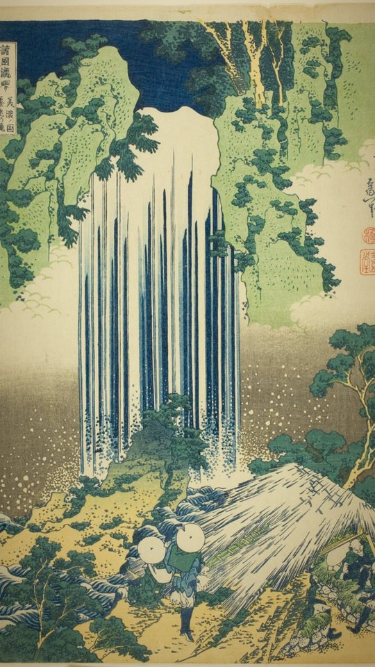
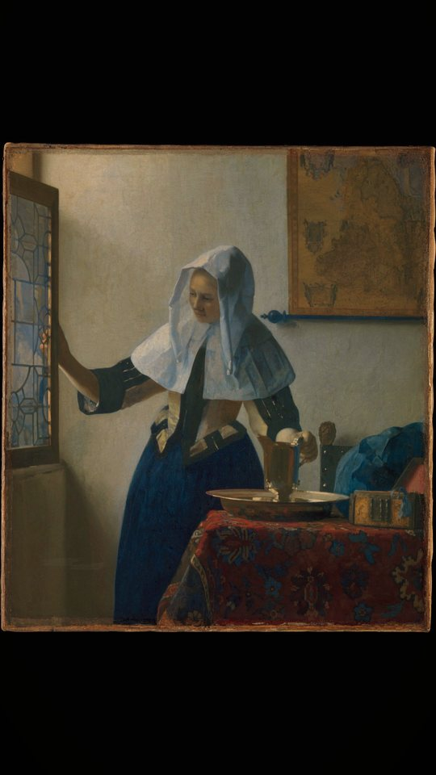
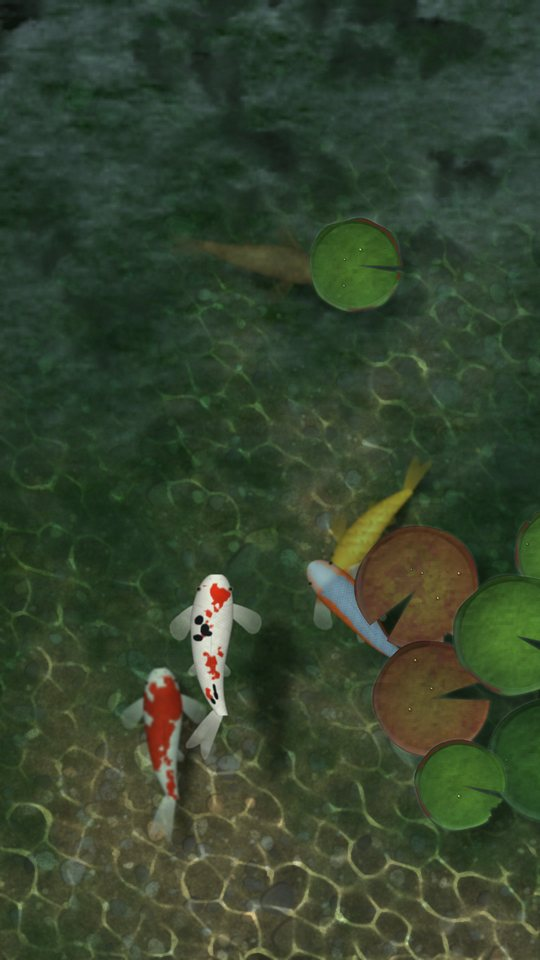
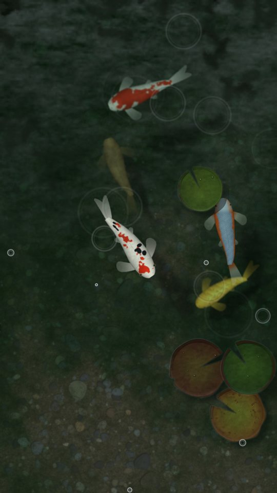
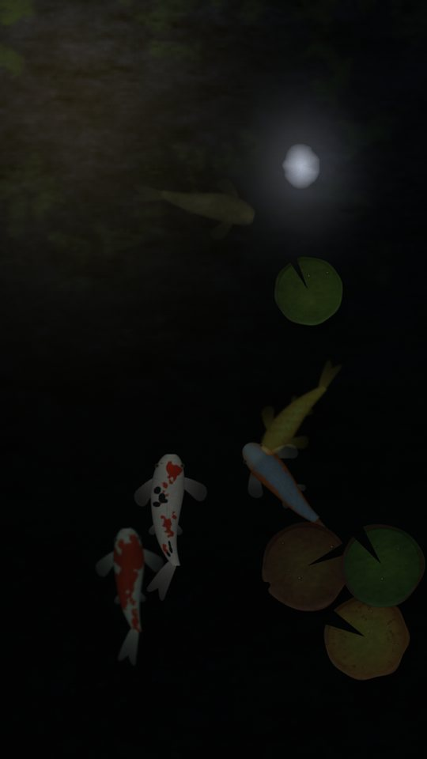
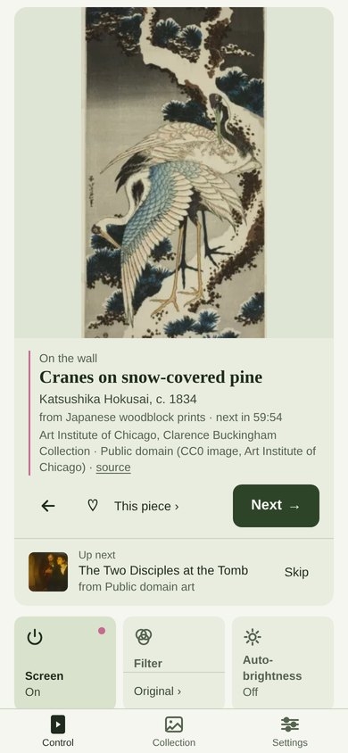
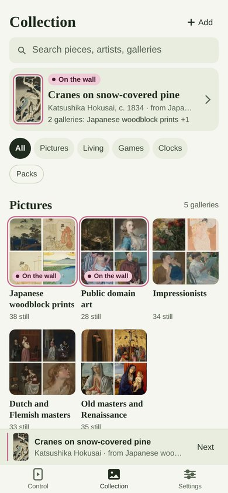
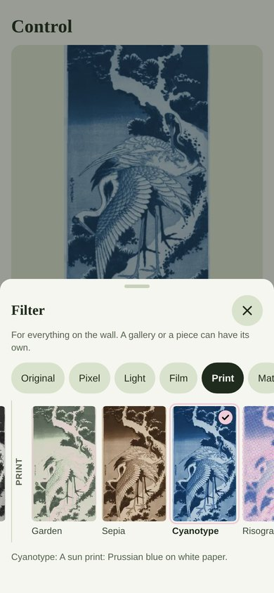

What it shows
Everything on the frame is a piece in a gallery that you hang. The project’s catalog has nine galleries of public-domain art, and your own photos and videos go in from a phone.




Captures · Gallery lightCaptures from my frame, with the Gallery light filter on, which warms the picture and shades its edges.
Scenes and games
Kitchen Koi pond Bavarian glockenspiel Sky gantry race Swarm clock Mini golf Turntable Engraved cuckoo
Laptop rendersOn the frame these are drawn as they play. The clips were rendered on a laptop from the same scene code, with a made-up time and weather. Tap one for the full-size video.
Follows your day
Pick your town in the app. The frame works out sunrise, sunset and where the sun and moon stand without going online. The koi pond gets rain rings when it rains, and a lantern and the moon after dark.
For the weather it sends only the coordinates to Open-Meteo, every 15 minutes. Turn the weather off and nothing is sent.



Laptop renderRendered on a laptop with the player’s own code, for Paris with made-up weather.
Looks
Everything the frame shows passes through one filter, set for the whole wall, one gallery or a single piece.
Laptop rendersBoth were rendered on a laptop through the player’s own code. The print is Hiroshige’s Plum Garden at Kameido, cropped to fill the panel.
The phone app
The app is a web page that the frame serves itself. Open eo2.local on a phone on the same Wi-Fi and add it to the Home Screen.






Demo copyThe screenshots come from a demo copy of the player on a laptop, with only public content and a made-up date and place.
Make it yours
Packs, scenes, sources and web pages are all plain files. None of this is published yet. This page will link to it when it is.
Packs and catalogs
Galleries come as packs. The frame checks every file before anything goes in.
Scenes
A scene is a small Python file. An uploaded one runs only after a PIN is set and you confirm it.
Sources and web pages
One Python file adds a source. A web page can hang like a picture.
HTTP API and Home Assistant
Everything the app does goes through an HTTP API. Home Assistant gets a ready-made package.
Bring a dead EO2 back
The install runs once, from a computer with Bluetooth and Python 3.9 or newer. It takes about 40 minutes, most of it waiting, and the frame stays closed.
- Wi-FiYour Wi-Fi details go over Bluetooth, the way the old Electric Objects app did.
- BackupThe original software is backed up onto the computer.
- CopyEO2 Linux is copied onto the frame.
- HelloThe frame restarts to a Hello screen with
eo2.localand a QR code.
The original Android stays in place. If EO2 Linux fails to start three times in a row, the frame goes back to Android by itself.